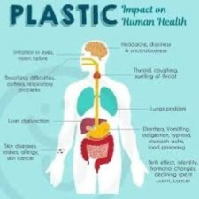

Effects of Plastic Pollution
Plastic waste affects wildlife, ecosystems, and communities. Here is how the damage shows up on land and at sea.
Marine ecosystems
- Ingestion and entanglement: Sea turtles, seabirds, and marine mammals often mistake plastic for food or become trapped in discarded gear.
- Habitat damage: Plastics can smother coral reefs, seagrass beds, and other sensitive habitats.
- Toxic exposure: Plastics can carry chemical additives and absorb pollutants, exposing wildlife to additional stress.

Wildlife on land
- Food confusion: Animals forage in landfills or along roads and ingest plastic instead of nutrition.
- Injury and disease: Entanglement can lead to cuts, infections, and limited movement.
- Ecosystem disruption: Plastic waste can alter soil health and block natural water flows.

Human health and community impacts
- Food and water exposure: Microplastics are being detected in seafood, drinking water, and agricultural soils.
- Air quality concerns: Burning plastic releases toxic fumes and fine particles.
- Economic costs: Coastal communities spend time and money cleaning shorelines and protecting tourism.
